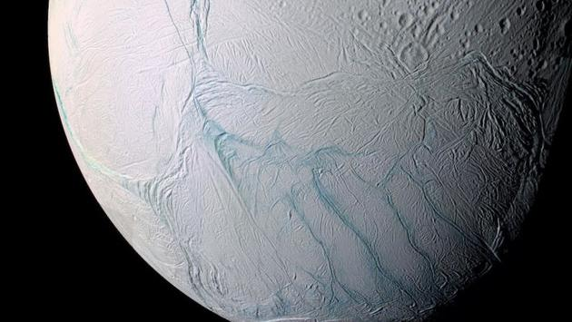
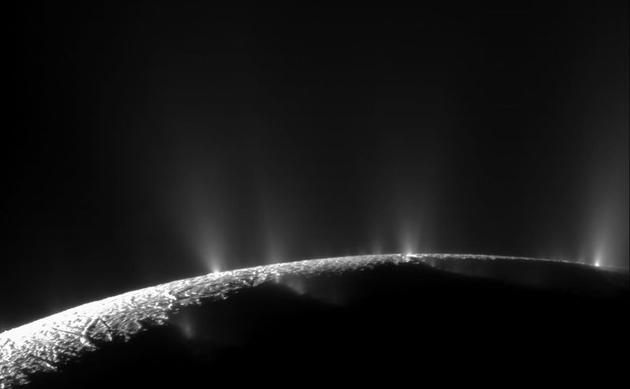
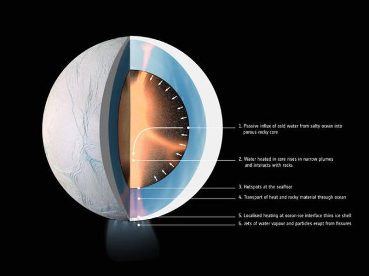

宜居星球？土卫二地下海水或已“保温”数十亿年

图为土卫二

土卫二的羽状喷流

土卫二的内层结构
新浪科技讯 北京时间11月14日消息，据国外媒体报道，如果从土卫二南极上空飞过，你会见到一幅无比壮观的图景。这颗被冰雪覆盖的卫星时常向太空中喷出一股股羽状喷流，说明土卫二存在全球性的地下海洋。科学家一直无法解释这么小的卫星哪来维持液态海洋所需的能量，但一项新研究显示，答案也许与土卫二内核的多孔结构有关。数十亿年来，土卫二上的水从未干涸过，说明它也许是一颗宜居星球。
这项发表在《自然天文学》（Nature Astronomy）上的新研究首次分析了拥有岩质内核的土卫二产生持续地热活动、为地下海洋保温的机制，关键在于，该研究采用的3D模型显示，这一过程可能已持续了数十亿年。并且为维持该过程，其内核必须湿润而多孔。对寻找外星微生物的天体物理学家而言，这项观测结果无疑是个好兆头。
土卫二直径约500公里，完全被冰壳覆盖。冰层最厚处约为20至25公里，但在南极的最薄处则仅有几公里。正是在冰层较薄的南部地区，我们发现了土卫二的“间歇泉”现象，水蒸气和冰粒时常从冰层裂隙中喷出，有些冰粒中还含有简单有机物。
土卫二的确在将自己的海洋喷入太空之中。多亏卡西尼号探测器，我们知道了这些蒸汽中含有盐和硅石粉尘。但要保有这些物质，海洋底部的温度必须极高。有了卡西尼号的探测结果，我们了解到土卫二的液态海洋与温暖的岩质内核的交界处正在发生某些重要的化学反应。
“只有规模惊人的热能（超过两百亿瓦）才能解释这些观测结果，此外还需要一种位于南极附近的内核活动机制。”该研究作者写道。
目前我们还不清楚土卫二如此惊人的能量从何而来。该过程所需热量高达内核岩石放射性物质衰变产生热量的100倍。也许土卫二的宿主行星——土星承担了大部分工作。土卫二沿一椭圆轨道围绕土星转动，引力的持续推拉造成了潮汐效应，使土卫二的内核物质相互摩擦，从而产生热量。但这也不足以抵消通过海洋散发的热量。按科学家掌握的全部情况来看，土卫二应该仅坚持了3千万年就彻底冻结成冰了才对。
然而，如今的土卫二仍然水分充足、活动频繁，因此必然存在另一种机制。为找出事件真相，一支由法国南特大学加埃勒·舍布雷（Ga?l Choblet）领导、由美国和欧洲科学家组成的研究团队借助一系列3D模拟、对土卫二内部情况展开了分析。
“土卫二究竟是如何持续获取能量、保持活跃状态的？这向来是个未解之谜。但如今我们开始更加详细地思考，土卫二岩质内核的结构与组成究竟在产生所需能量的过程中扮演了怎样的关键作用。”舍布雷指出。
根据其研究模型，只有当土卫二的内核由不坚固、易变形的多孔岩石构成时，才可能维持目前的液态海洋。如果这些孔状结构占据了内核的20%至30%，冰冷的液态水便可涌入内核，并由潮汐效应引发的摩擦加热（核心水温可达363开尔文，即90摄氏度）。当这部分海水温度高于周围海水时，便会向上运动、并从冰层缝隙中喷出，类似于地球上的海底热泉。这一过程不断重复，形成某种意义上的水力循环。每过2500万年至2.5亿年，土卫二的全部海水便经由内核加热一遍。最惊人的是，该模型显示，这一过程可持续数十亿年之久。
NASA天体物理学研究所科学家克里斯托弗·格伦（Christopher Glein）指出，这项研究解答了一个重要问题：如何在一颗小型冰质卫星内部建立地热系统。
“相比以往，我们将观测与理论，化学与物理结合得更加紧密，从而更加全面地了解了土卫二的运作机制。”格伦解释道，“一颗外星球上的地热系统能够为生命提供能量和营养物质，我一想到就激动不已。这项研究进一步证明土卫二将是本世纪太空探索的热门目标。”
的确，除了温暖的海水、有机分子、以及其它的生命“必备组件”之外，土卫二的海洋出现至今也许已有数十亿年，理论上而言，这么长的时间已经足够产生简单微生物了。但在进一步探索土卫二之前，我们还无法暂下定论。
“这些科学家做了一项伟大的工作。”康奈尔大学天体物理学与行星科学研究中心的天文学家乔纳森·鲁宁（Jonathan Lunine）表示，“在多孔、湿润的内核中产生的潮汐热很能说得通，确实能给海水加热。”
NASA太空科学与工程部门项目主管亨特·怀特（Hunter Waite）也肯定了这种理论，并提到了他今年早期担任共同作者的一项研究：“岩质内核中产生的潮汐热是地热活动与氢气制备的重要组成部分，我们在《科学》上发表的那篇探讨分子氢制备的论文中也讨论了这一点。”
不过，虽然这项新研究解释了土卫二的液态全球性海洋、内部产热、南极冰层较薄的现象、以及地热活动，但并未解释为何土卫二北极区域存在遍布撞击坑的远古冰层。而按该模型的预测，土卫二两极的冰层都应当相对较薄。因此仍有奥秘尚未解开，我们仍需开展进一步研究。（叶子）